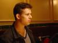
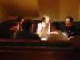
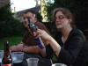

A 'hi-tech' exhibition of obsolete Macintosh computers in a big stack, showing a specially prepared slide-show.
A 'hi-tech' exhibition of obsolete Macintosh computers in a big stack, showing a specially prepared slide-show.
Jeremy Dennis.
cyberCAPTION2003 took place on Saturday and Sunday 2-3 August 2003 in sunny Oxford. Rowland Willets took his Sony Mavica CD camera with him...
People index | Picture Index
A 'hi-tech' exhibition of obsolete Macintosh computers in a big stack, showing a specially prepared slide-show.
Jeremy Dennis.
The charity auction, held out in the garden this year. Artwork by Jeremy Dennis.
 Charity auction. Artwork by David Goodman
Charity auction. Artwork by David Goodman
Hoggy,
Mike Froggat.
Charity Auction. Artwork by Andy Smith
Mike Froggat.
Charity auction. Artwork by Andy Richmond.
 Charity auction. A deck of 'blank white cards', with sketches by various.
Charity auction. A deck of 'blank white cards', with sketches by various.
Hoggy.
 Charitt auction. Artwork by Mark Buckingham
Charitt auction. Artwork by Mark Buckingham
Hoggy.
Charity auction. A page from One Bad Rat by Bryan Talbot.

Our regular venue was double-booked for the evening, so we retired to the Three Goats Heads. Photo by Gideon Nisbet
Rowland Willets.

The (ex)Oxford posse in the Three Goats Heads on Saturday evening. Photo by Gideon Nisbet
Alex Williams,
Daniel Hartwell,
Andy Luke,
Mike Froggat,
Tom Anderson,
Ian Snell.
 A trick of the light turns out site manager in to an extra from The Ring. Photo by Gideon Nisbet
A trick of the light turns out site manager in to an extra from The Ring. Photo by Gideon Nisbet
Ruth O'Reilly.
 On Sunday the exhibition was re-erected in its traditional place. We set up three old Macs with a drawing program aimed at children called KidPix (www.kidpix.com/). Artwork by Damian Cugley.
On Sunday the exhibition was re-erected in its traditional place. We set up three old Macs with a drawing program aimed at children called KidPix (www.kidpix.com/). Artwork by Damian Cugley.
James Christie,
Jenni Scott,
Jeremy Dennis.
Drawing on the 'art machines'. Artwork by Damian Cugley.
James Christie,
Jenni Scott.
The Picky Picky Game is an on-line collaborative webcomics game (caption.org/picky/). Our 'devirtualized' version has the pictures turned in to laminated cards that can be rearranged by the viewers thanks to VELCRO technology.
 Time to pack away the old Macs used in our 'hi-tech' exhibition.
Time to pack away the old Macs used in our 'hi-tech' exhibition.
Hoggy,
Lyndsey Pickup.

Ah, so this is where the film goes in! Special Photo Mission Action Man has a working 110 camera built in to his chest.
Mike McNeil,
Carla Speed McNeil,
Action Man.
Carla Speed McNeil sketched out a description of her comic down the pub on the Sunday evening.